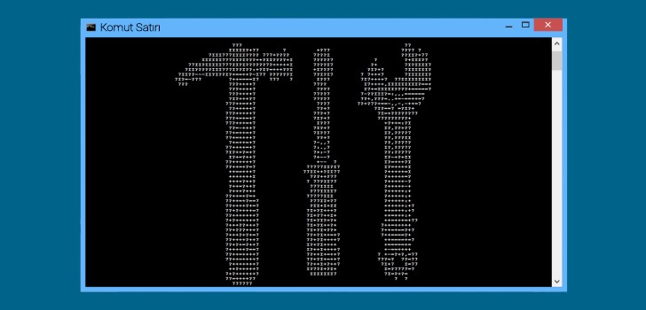

ChatCore.AI
Kurumsal veriler üzerinde çalışan RAG destekli yapay zekâ asistanı. Vektör arama ve önbellek katmanıyla ölçeklenebilir sohbet deneyimi.
Yazılım geliştirme & yapay zekâ projeleri
Matematik ve Bilgisayar Bilimleri kökenli bir yazılım geliştiriciyim. Kurumsal sistemlerde yapay zekâ destekli servisler, backend mimarileri ve veri katmanları kuruyorum; akademik tarafta yapay zekâ algoritmalarını diferansiyel geometri ile inceliyorum.

Merhaba, ben İrem. Eskişehir Osmangazi Üniversitesi Matematik ve Bilgisayar Bilimleri bölümünden derece ile mezun oldum, aynı bölümde yüksek lisansımı tamamladım. Backend ve frontend geliştirme, sunucu yönetimi, veritabanı geliştirme, sistem yönetimi ve DevOps konularında deneyim sahibiyim. Son dönemde kurumsal süreçleri hızlandıran yapay zekâ destekli servisler (RAG mimarileri, doküman analizi, Azure OpenAI entegrasyonları) üzerine çalışıyorum. Node.js, PHP, JavaScript, C# ve Python ile ürün geliştirdim; hedefim güvenlik açığı bırakmayan, güncel teknolojilerle temiz ve sürdürülebilir kod yazan bir geliştirici olmak.
Profesyonel yazılım geliştirme deneyimi
Matematik ve Bilgisayar Bilimleri yüksek lisansı
API, veritabanı, arayüz ve dağıtım zinciri
Güvenli kod, pentest araçları ve DevSecOps pratikleri
Projelerde aktif olarak kullandığım diller, araçlar ve platformlar.
IC Holding
Kurumsal süreçler için yapay zekâ destekli servisler: doküman analizi, Azure OpenAI entegrasyonları ve backend mimarileri.
Key Yazılım Çözümleri A.Ş.
PHP tabanlı kurumsal uygulamaların geliştirilmesi ve bakımı.
Mevsimi Gıda Pazarlama Ticaret A.Ş.
PHP, Symfony ve Laravel ile e-ticaret servisleri.
Jotform Yazılım A.Ş.
PHP ve JavaScript ile ürün geliştirme.
Piton Ar-Ge ve Yazılım
C# ve .NET ile servis geliştirme.
FetalIST Bilişim Teknolojileri A.Ş.
Java ve AWS üzerinde uçtan uca geliştirme.
Eskişehir Osmangazi Üniversitesi — 3.70 GNO
Tez: Yapay zekâ algoritmalarının diferansiyel geometri ile incelenmesi.
Eskişehir Osmangazi Üniversitesi — 3.12 GNO
Bölüm derecesi ile mezuniyet.
Kaynak kodları GitHub üzerinde açık olan kişisel ve deneysel projeler.
Kurumsal veriler üzerinde çalışan RAG destekli yapay zekâ asistanı. Vektör arama ve önbellek katmanıyla ölçeklenebilir sohbet deneyimi.


Metin veya bağlantıları anında QR koda dönüştüren web uygulaması; renk ve logo özelleştirmesi ile geçmiş yönetimi sunar.

WebSocket üzerinden çalışan, odalara ayrılmış gerçek zamanlı mesajlaşma uygulaması.

MVC deseni ve özel yönlendirme yapısı kullanılarak geliştirilen e-ticaret sepet uygulaması.
Yapay zekâ algoritmalarının geometrik yapısı üzerine yürüttüğüm çalışmalar.
Öğrenme algoritmalarının parametre uzayını bir manifold olarak ele alıp, optimizasyon davranışını diferansiyel geometri araçlarıyla inceleyen çalışma.
Öğrendiklerimi derlediğim uzun soluklu teknik rehberler.

Tehdit modelleme, pentest, SOC, DevSecOps, bulut ve Kubernetes güvenliğini kapsayan ileri seviye yol haritası.

Mikroservislerin ne zaman doğru tercih olduğu, servis sınırlarının nasıl çizileceği ve entegrasyon desenleri.

Terminal komutlarını tek kaynakta birleştiren kapsamlı rehber; parametre açıklamaları ve platform karşılaştırmalarıyla.
Proje, iş birliği veya sadece merhaba demek için yazabilirsiniz.